Hi! We're Katy and Eugene, your Portugal wedding videographer team. Your wedding day will move quickly! We help you slow it down and remember the moments that mattered most.
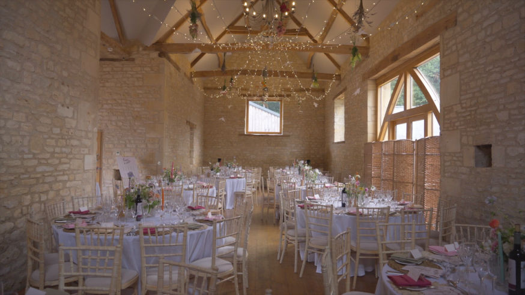
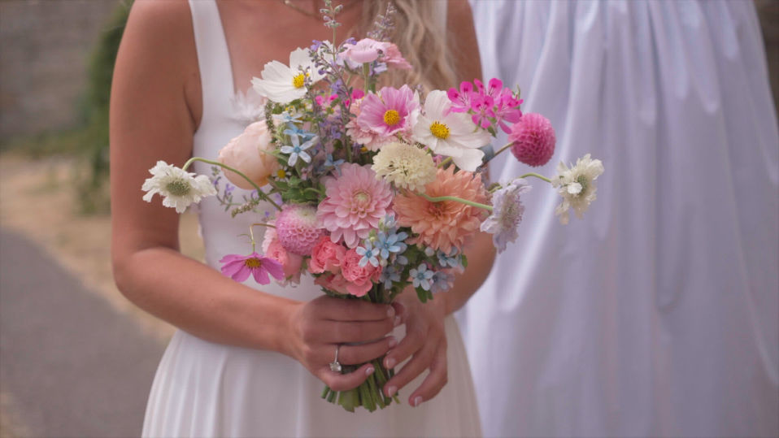
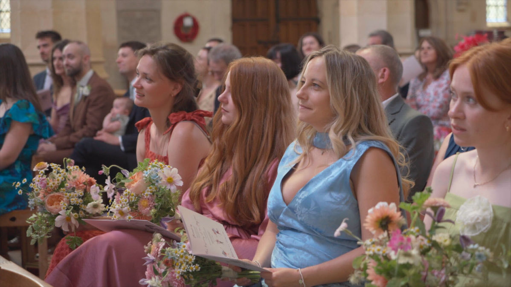
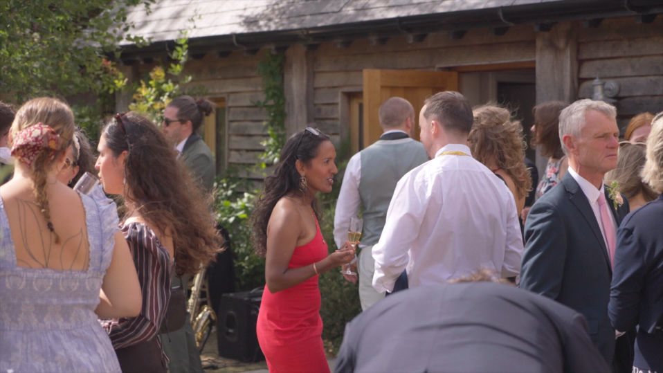
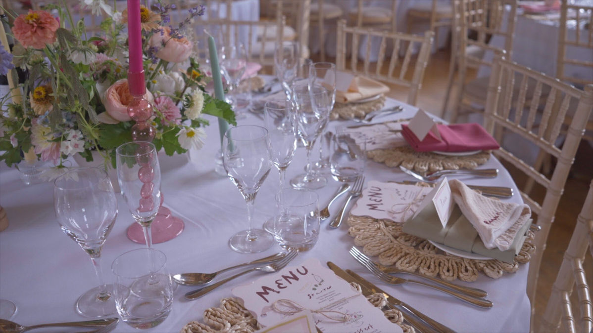
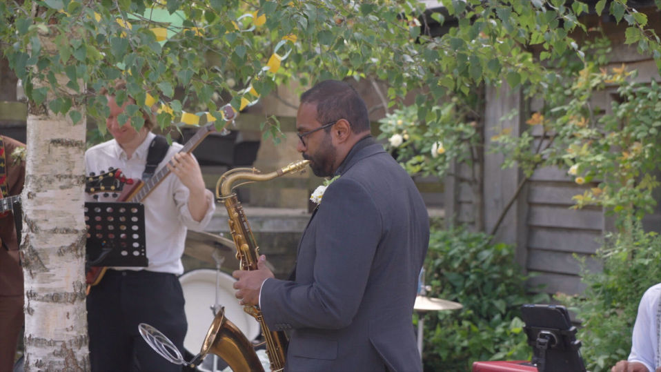
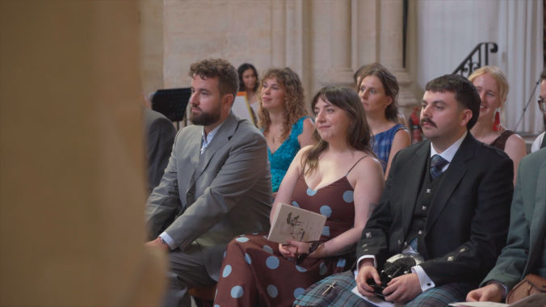
6 minute highlight video
1 or 2 videographers depending on availability
Drone shots if possible
€1600
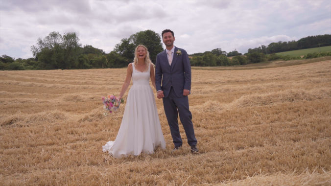
6 minute highlight video
30+ minutes
Includes speeches with audio and full ceremony
2 Videographers
Drone shots if possible
€3000
Tailored exactly to your needs, do you want interviews with family members, additional days captured, or maybe portrait videos for sharing on social media.
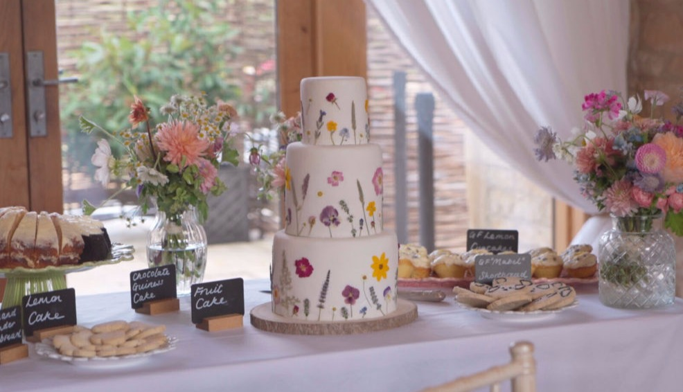
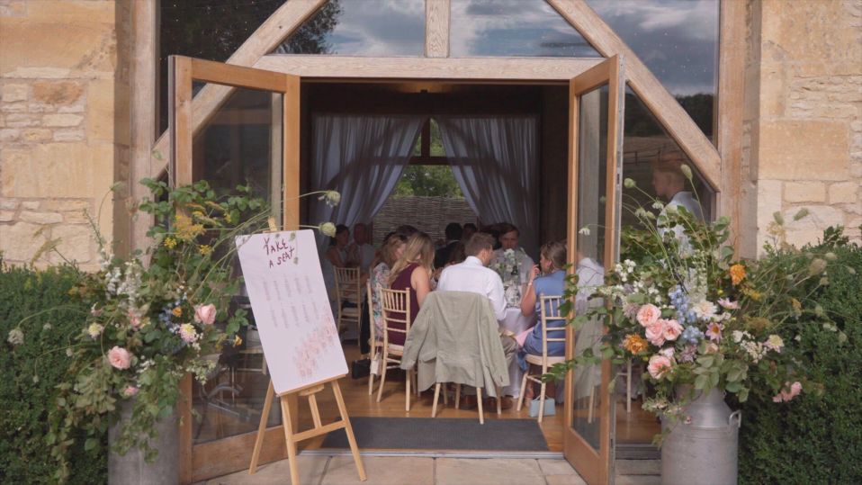
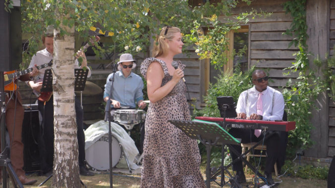
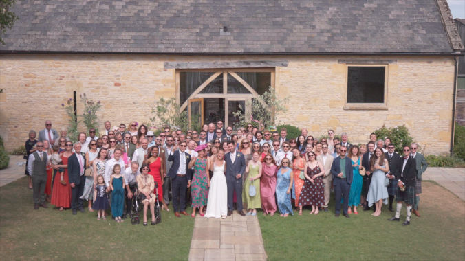
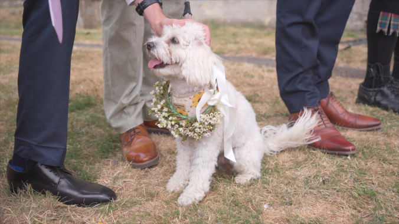
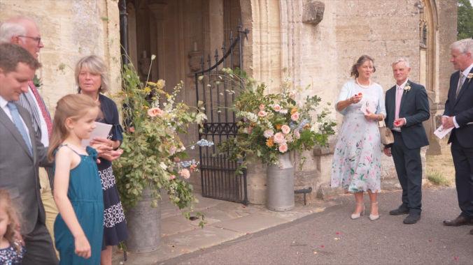
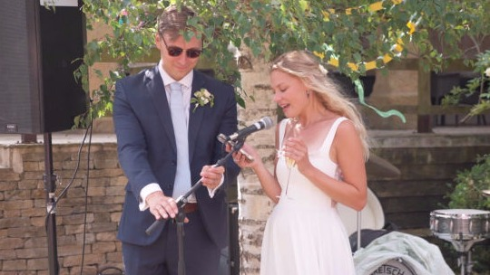
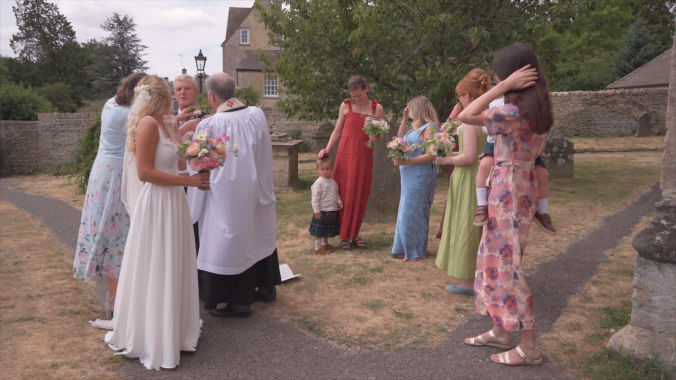